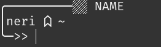
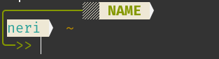
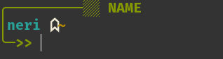
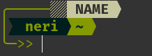
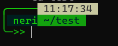

SHELL PROMPT
SHELL PROMPT CUSTOMISATION USING PS1
In Bash, your command line prompt is controlled by special shell environment variables: PS1, PS2, PS3, and PS4. The PS1 (Prompt String 1) variable defines the primary interactive prompt you see every time you type a command. Customizing PS1 turns an uninspiring terminal into an informative, aesthetically pleasing dashboard.
Open your terminal and test it out right now:
bash
PS1="hello >> "
To persist your custom prompt permanently across terminal sessions, place the export PS1="..." definition in your ~/.bashrc (or ~/.zshrc).
Key Points
- Non-Printing Characters: Always wrap ANSI color escape sequences in
\[ ... \]. This informs Bash that those characters occupy zero display width on the screen, preventing broken line-wrapping and history scrolling bugs. - Resetting Colors: Always conclude your prompt with
\[\e[0m\]to ensure that commands typed by the user stay in the default terminal font color. - Portability: Standard ANSI 8-color and 16-color codes work everywhere. 24-bit TrueColor (RGB) gives beautiful pastel tones on modern terminal emulators (Kitty, Alacritty, iTerm2, Windows Terminal).
Escape sequences and Color Codes
Commonly Used Escape Sequences
| Escape Sequence | Purpose / Description |
|---|---|
\u | Displays the username of the current user. |
\h | Displays the hostname up to the first dot (e.g., archlinux). |
\H | Displays the full qualified domain hostname. |
\w | Displays the full path of the current working directory (with ~ for $HOME). |
\W | Displays only the basename of the current working directory. |
\d | Displays date in "Weekday Month Date" format (e.g., "Tue Nov 3"). |
\t | Displays the current time in 24-hour HH:MM:SS format. |
\T | Displays the current time in 12-hour HH:MM:SS format. |
\@ | Displays the current time in 12-hour am/pm format. |
\n | Inserts a newline character (creates multi-line prompts). |
\e | ASCII escape character (initiates an ANSI escape sequence). |
\$ | Displays # if effective UID is 0 (root), otherwise displays $. |
\v | Displays the version of Bash running. |
\! | Displays the history number of this command. |
Graphics Rendition Parameters
| Code | Name | Effect / Usage |
|---|---|---|
| 0 | Reset | Turns off all styles and color attributes. |
| 1 | Bold / Bright | Bolds the text font or boosts intensity. |
| 2 | Dim / Faint | Decreased font intensity. |
| 3 | Italic | Italicized text font (supported on modern terminals). |
| 4 | Underline | Draws an underline beneath the prompt text. |
| 7 | Invert | Reverses foreground and background colors. |
| 30–37 | Foreground Color | Sets text color to one of the 8 standard colors. |
| 40–47 | Background Color | Sets background fill to one of the 8 standard colors. |
| 90–97 | Bright Foreground | High-intensity text colors. |
| 100–107 | Bright Background | High-intensity background colors. |
Background and Text Colors
| Color | Standard Foreground | Bright Foreground | Background Code |
|---|---|---|---|
| Black | 30 | 90 | 40 |
| Red | 31 | 91 | 41 |
| Green | 32 | 92 | 42 |
| Yellow | 33 | 93 | 43 |
| Blue | 34 | 94 | 44 |
| Magenta / Purple | 35 | 95 | 45 |
| Cyan | 36 | 96 | 46 |
| White | 37 | 97 | 47 |
24-Bit TrueColor (RGB) Format
\[\e[38;2;⟨R⟩;⟨G⟩;⟨B⟩m\]— Sets precise 24-bit RGB Foreground color.\[\e[48;2;⟨R⟩;⟨G⟩;⟨B⟩m\]— Sets precise 24-bit RGB Background color.
bash
# Custom emerald green text on dark slate background: PS1="\[\e[38;2;166;223;144;48;2;20;25;20m\] \u@\h \[\e[0m\] \w >> "
PS1 Examples

bash
PS1="╭─────────🮙🮙 NAME\n│\u 🯊 \w\n╰─>> "

bash
PS1="\[\e[32;1m\]╭─────────🮙🮙 NAME\n\[\e[32m\]│\[\e[36m\]\u \[\e[37m\]🯊 \[\e[33m\]\w\n\[\e[32m\]╰─>> \[\e[0m\]"

bash
PS1="\[\e[32;1m\]╭─────────\[\e[37m\]🮙🮙\[\e[32m\]\[\e[47m\] NAME \[\e[0m\]🭬\n\[\e[32m\]│\[\e[47m\]\[\e[36m\]\u \[\e[0m\]🭬\[\e[0m\]\[\e[37m\] \[\e[33m\]\w\n\[\e[32m\]╰─>>\[\e[0m\]"

bash
PS1="\[\e[32;1m\]╭─────\[\e[38;2;200;200;160m\]🮙🮙\[\e[38;2;50;50;50;48;2;200;200;160m\]NAME \[\e[0;38;2;200;200;160m\]🭬\n\[\e[32m\]│\[\e[38;2;0;30;30m\]🭨\[\e[32;48;2;0;30;30;1m\] \u\[\e[0;42;38;2;0;30;30m\]🭬\[\e[0;42;38;2;0;40;40;1m\]\w \[\e[0;32m\]🭬\[\e[0;32m\]\n╰─>> \[\e[0m\]"

bash
PS1="\[\e[32;1m\]╭─────\[\e[38;2;200;200;160m\]\[\e[38;2;50;50;50;48;2;200;200;160m\] \t \[\e[0;38;2;200;200;160m\]\n\[\e[32m\]│\[\e[38;2;0;30;30m\]\[\e[32;48;2;0;30;30;1m\] \u\[\e[0;42;38;2;0;30;30m\]\[\e[0;42;38;2;0;40;40;1m\] \w \[\e[0;32m\]\[\e[0;32m\]\n╰─>> \[\e[0m\]"
PRO TIP: DYNAMIC GIT BRANCH & EXIT STATUS IN PS1 (PURE BASH)
You don't need heavyweight plugins like Oh-My-Zsh or Starship to see your Git status and previous command success. You can write a lightweight pure Bash prompt in your ~/.bashrc that loads instantly:
~/.bashrc
# Function: Returns current git branch with clean/dirty indicators
parse_git_branch() {
local branch
branch=$(git rev-parse --abbrev-ref HEAD 2>/dev/null) || return
local status=""
# Check if working tree has unstaged or staged changes
[[ -n $(git status --porcelain 2>/dev/null) ]] && status="*"
echo " (git:${branch}${status})"
}
# Function: Shows green checkmark if last command succeeded, or red cross + exit code
format_exit_status() {
local exit_code=$1
if [[ $exit_code -eq 0 ]]; then
echo "\[\e[32m\]✔\[\e[0m\]"
else
echo "\[\e[31m\]✘ [${exit_code}]\[\e[0m\]"
fi
}
# PROMPT_COMMAND runs right before PS1 is displayed
set_prompt() {
local LAST_STATUS=$?
local STATUS_STR
STATUS_STR=$(format_exit_status "$LAST_STATUS")
PS1="${STATUS_STR} \[\e[38;2;166;223;144;1m\]\u@\h\[\e[0m\]:\[\e[38;2;100;180;255m\]\w\[\e[38;2;255;180;80m\]\$(parse_git_branch)\[\e[0m\]\n\$ "
}
PROMPT_COMMAND=set_promptFancy Characters
░ ▒ ▓ │ ┤ ╡ ╢ ╖ ╕ ╣ ║ ╗ ╝ ╜ ╛ ┐ └ ┴ ┬ ├ ─ ┼ ╞ ╟
╚ ╔ ╩ ╦ ╠ ═ ╬ ╧ ╨ ╤ ╥ ╙ ╘ ╒ ╓ ╫ ╪ ┘ ┌ █ ▄ ▌ ▐ ▀
⌠ ⌡ ░ ▒ ▓ │ ┤ ╣ ║ ╗ ╝ ┐ C └ ┴ ┬ ├ ─ ┼ ╚ ╔ ╩ ╦ ╠
═ ╬ D ┘ ┌ █ ▄ ▀ ╝ ╗ ╔ ╚ ╣ ╩ ╦ ╠ ═ ║ ╬ ▀ ▄ ┘ ┐ ┌
└ ┤ ┴ ┬ ├ ─ │ ┼ █ ┘ ┐ ┌ └ ┼ ─ ├ ┤ ┴ ┬ │ ╷ ╶ ┌ ╴
┐ ─ ┬ ╵ │ └ ├ ┘ ┤ ┴ ┼ ╭ ╮ ╰ ╯ ▘ ▝ ▀ ▖ ▍ ▞ ▛ ▗
▚ ▐ ▜ ▃ ▙ ▟ ▉ ╵ ╶ └ ╷ │ ┌ ├ ╴ ┘ ─ ┴ ┐ ┤ ┬ ┼ ╧
- ╟ ╚ ╤ ║ ╔ ╠ ╢ ╝ ═ ╩ ╗ ╣ ╦ ╬ ╵ ╶ └ ╷ │ ┌ ├ ╴ ┘
─ ┴ ┐ ┤ ┬ ┼ ▀ ▁ ▂ ▃ ▄ ▅ ▆ ▇ █ ▉ ▊ ▋ ▌ ▍ ▎ ▏ ▐
░ ▒ ▓ ▔ ▕ ▖ ▗ ▘ ▙ ▚ ▛ ▜ ▝ ▞ ▟ ─ ━ │ ┃ ┄ ┅ ┆
┇ ┈ ┉ ┊ ┋ ┌ ┍ ┎ ┏ ┐ ┑ ┒ ┓ └ ┕ ┖ ┗ ┘ ┙ ┚ ┛ ├ ┝ ┞ ┟
┠ ┡ ┢ ┣ ┤ ┥ ┦ ┧ ┨ ┩ ┪ ┫ ┬ ┭ ┮ ┯ ┰ ┱ ┲ ┳ ┴ ┵ ┶ ┷ ┸
┹ ┺ ┻ ┼ ┽ ┾ ┿ ╀ ╁ ╂ ╃ ╄ ╅ ╆ ╇ ╈ ╉ ╊ ╋ ╌ ╍ ╎ ╏
═ ║ ╒ ╓ ╔ ╕ ╖ ╗ ╘ ╙ ╚ ╛ ╜ ╝ ╞ ╟ ╠ ╡ ╢ ╣ ╤ ╥ ╦ ╧
╨ ╩ ╪ ╫ ╬ ╭ ╮ ╯ ╰ ╱ ╲ ╳ ╴ ╵ ╶ ╷ ╸ ╹ ╺ ╻ ╼ ╽ ╾ ╿
Resources
--- End of Blog ---